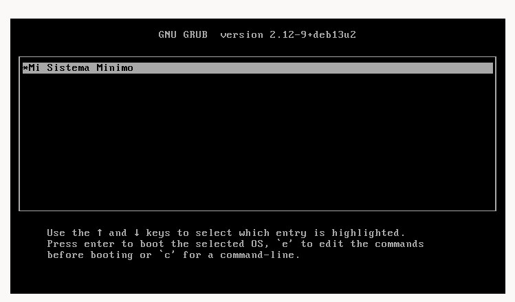
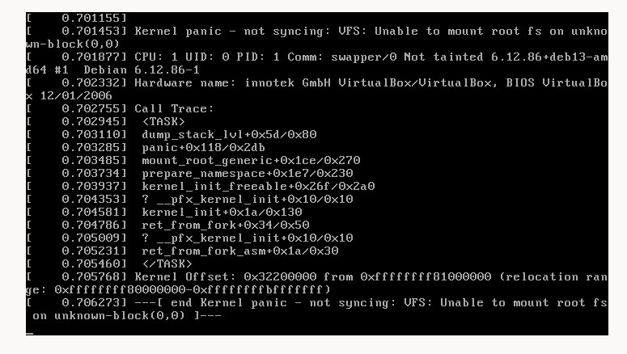

En esta tarea se construyó una imagen ISO arrancable de Linux desde cero, sin partir de ninguna distribución preexistente. El objetivo central fue comprender el proceso de arranque a bajo nivel: cómo el firmware BIOS entrega el control al cargador de arranque GRUB, y cómo éste localiza y transfiere la ejecución al núcleo del sistema operativo.
Para ello se extrajo el núcleo ejecutable comprimido (vmlinuz) del sistema Debian 13 instalado en el equipo anfitrión, se configuró manualmente el menú de GRUB, se empaquetó todo en una imagen ISO mediante grub-mkrescue, y finalmente se ejecutó dentro de una máquina virtual en VirtualBox. El resultado de esta primera etapa es intencionalmente un Kernel Panic, que confirma que el núcleo fue cargado y ejecutado correctamente, pero no encontró un sistema de archivos raíz — funcionalidad que se incorporará en etapas posteriores.
Se llevo a cabo sobre el siguiente entorno de software y hardware:
| Parámetro | Valor |
|---|---|
| Sistema operativo anfitrión | Debian 13 (Trixie) — arquitectura x86_64 |
| Versión del kernel utilizado | 6.12.86+deb13-amd64 |
| Ruta de trabajo | /home/moises-sanchez/Documentos/Seguridad |
| Herramienta de virtualización | Oracle VirtualBox |
El sistema anfitrión opera con firmware UEFI, por lo que no incluye por defecto los módulos necesarios para generar sectores de arranque compatibles con BIOS (i386-pc). VirtualBox emula una máquina clásica con BIOS, por lo que se requirió instalar el paquete grub-pc-bin:
sudo apt update
sudo apt install grub-pc-binEsta instalación depositó los archivos de los módulos en /usr/lib/grub/i386-pc/, que son referenciados directamente al momento de construir la imagen ISO.
Se definió un árbol de directorios dentro de la ruta de trabajo que sirve como raíz del sistema de archivos a empaquetar en la ISO. La herramienta grub-mkrescue espera encontrar la configuración del cargador en la ruta boot/grub/grub.cfg relativa a esa raíz:
cd /home/moises-sanchez/Documentos/Seguridad
mkdir -p iso/boot/grubCon esto quedó establecida la siguiente estructura base del proyecto:
El archivo vmlinuz es el núcleo Linux en su forma ejecutable comprimida. Se reutilizó el kernel del propio sistema Debian 13 instalado en el anfitrión, copiándolo al directorio de construcción de la ISO:
cp /boot/vmlinuz-6.12.86+deb13-amd64 \
/home/moises-sanchez/Documentos/Seguridad/iso/boot/El archivo ocupa aproximadamente 12 MB y contiene el núcleo comprimido. GRUB se encargará de descomprimirlo en memoria durante el proceso de arranque antes de transferirle la ejecución.
Se creó el archivo de configuración de GRUB, que define las entradas del menú de arranque y los parámetros que se pasan al núcleo. En esta primera etapa la configuración es mínima: una sola entrada que indica a GRUB la ruta del kernel y lo carga en modo solo lectura (ro):
#
# DO NOT EDIT THIS FILE
#
# It is automatically generated by grub-mkconfig using templates
# from /etc/grub.d and settings from /etc/default/grub
#
menuentry 'Mi Sistema Minimo' {
load_video
echo 'Loading Linux 6.12.86+deb13-amd64 ...'
linux /boot/vmlinuz-6.12.86+deb13-amd64 ro
}Para simplificar la reconstrucción de la ISO ante cualquier modificación futura, se elaboró un script de Bash que automatiza la invocación de grub-mkrescue. Esta herramienta toma el árbol de directorios iso/ y genera una imagen ISO 9660 híbrida arrancable:
#!/bin/bash
grub-mkrescue -d /usr/lib/grub/i386-pc -o ImagenLinux.iso isoEl parámetro -d apunta explícitamente a los módulos BIOS instalados previamente, garantizando la compatibilidad con la emulación de VirtualBox. El parámetro -o define el nombre del archivo de salida. Se otorgaron permisos de ejecución al script mediante:
chmod +x /home/moises-sanchez/Documentos/Seguridad/haceImagen.shSe ejecutó el script desde la raíz del proyecto. Internamente, grub-mkrescue delega la creación del sistema de archivos a xorriso, que además añade el sector de arranque híbrido BIOS/UEFI en los primeros 512 bytes de la imagen:
cd /home/moises-sanchez/Documentos/Seguridad
./haceImagen.shLa herramienta reportó la creación exitosa del archivo:
xorriso 1.5.6 : RockRidge filesystem manipulator, libburnia project.
...
xorriso : NOTE : Copying to System Area: 512 bytes from file
'/usr/lib/grub/i386-pc/boot_hybrid.img'
ISO image produced: 10975 sectors
Writing to 'stdio:ImagenLinux.iso' completed successfully.El archivo resultante ImagenLinux.iso de aproximadamente 22 MB quedó ubicado en la raíz del directorio de trabajo, listo para ser montado en la máquina virtual.
Se creó una nueva máquina virtual configurada para operar completamente en memoria RAM, sin almacenamiento persistente. La siguiente tabla resume los parámetros de hardware virtual asignados y su justificación:
| Parámetro | Valor | Justificación |
|---|---|---|
| Nombre | smin | Identificador del sistema mínimo |
| Tipo / Versión | Linux / Debian (64-bit) | Corresponde al kernel de 64 bits utilizado |
| Memoria RAM | 2048 MB | Suficiente para esta etapa y las siguientes |
| Procesadores | 1 CPU | Configuración mínima sin SMP |
| Disco duro | Sin disco virtual | El sistema opera en modo Live-RAM sin persistencia |
| Unidad óptica | ImagenLinux.iso | Única fuente de arranque del sistema |
La ISO fue asignada desde Configuración → Almacenamiento → Controlador IDE, seleccionando el archivo /home/moises-sanchez/Documentos/Seguridad/ImagenLinux.iso. Al iniciar la máquina, GRUB detectó correctamente la imagen y presentó el menú de arranque con la entrada "Mi Sistema Minimo".
Al seleccionar la entrada del menú y presionar Enter, GRUB transfirió correctamente el control al núcleo. Se observó en pantalla la secuencia completa de inicialización: detección de CPU, enumeración de memoria, carga de controladores, inicialización del subsistema de seguridad y liberación de la memoria del initrd temporal.
Como resultado terminal, el sistema presentó el siguiente mensaje de Kernel Panic:
[ 0.5xx] Kernel panic - not syncing: VFS: Unable to mount root fs
on unknown-block(0,0)
